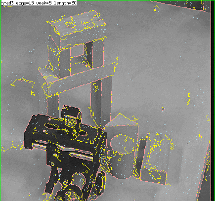

著者: 国吉 康夫,電総研
MARSは、平面空間内における マルチ自律移動ロボットのためのシミュレーション環境である。 このプログラムは、Euslispで記述されている。
開発状況: 1995年1月、MARSの発表直前バージョンが電総研内で用いられている。 システムの改善を活発に行い、1995年の上期内に最初のバージョンを 発表する計画である。 その後も、システムの向上をはかり、1996年3月までに安定した状態を 達成したいと望んでいる。 発表の告示はEuslispのメーリングリストや他のインターネットサービス を通じて行われる予定である。 恐らくライセンスの条件をEuslispから分けるであろう。
目的: MARSは、単一あるいは複数の移動ロボットで知的ロボットの研究に使用することを 意図してつくられている。たとえば、行動学習やマップ構築や知能収集や 複数ロボット協調や協調学習などである。
このディレクトリからeusxを呼び出す。 すべてのファイルが自動的にロードされ、シミュレータが動作し始める。 windowがオープンされ、初期メッセージが下部windowに現れるまで待つこと。
例:
Try "SYSTEM"->"Load" menu. Load "example.bbs". And "SCL"->"On" menu.
注意:
SCL
"Off" シミュレーションは一時停止するが、GUI処理は続行される。
SYSTEM
"Quit" 最上位のループから抜ける。(mars-loop)により再開できる。
SYSTEM
"Save" 現在の状態をファイルにセーブする。
SYSTEM
"All-Clear" すべてを消し、システムを初期化する。
SYSTEM
"Reset" ロボットの内部状態をリセットするために使用する(特殊目的)。
MARSを始めたとき、図 21(左)に示されるような メインwindowを見ることができる。MARSは、図 21(右) のようなモジュールアーキテクチャを採用している。 それは、物理シミュレーションモジュールとロボット制御モジュールと ユーザーインターフェースモジュールとユーザーが定義したグローバル 制御ループにより構成されている。
物理シミュレーション: 現在の物理シミュレーションモジュールは、4つのタイプのオブジェクトを 処理している。 wall (固定障害物), block (移動障害物), robot-body (活動オブジェクト)とmagic-block (経験学習するための 特別な報酬を与えるオブジェクト)である。
ロボットモデル: 物理的シミュレーションモジュールとロボット制御モジュールとの 間のインターフェースである。 いくつものrobotモデルを生成することができ、 擬似並列でシミュレートできる。 robotはそれぞれ、robot-bodyとrobot-brainの のモジュールの組みで構成される。 robot-bodyは、ロボットの物理的な性質を定義し、 robot-brainはロボットの行動を定義する。
センサモデル: ユーザーは、robot-bodyのどこにでもいくつものセンサを 選択して取り付けることができる。 現在、実現されているセンサモデルは、以下のものである。 距離センサ (走行距離), 角度センサ (回転角), 接触センサ, 赤外線センサ, レーザセンサ (超音波), 視覚センサ (object-name-sensor)。 現在のバージョンでは、ノイズや不確定要素について考えていない。
ロボット知能: robot-brainは、シミュレートしたセンサデータを処理したり 行動命令を生成するためにユーザーで定義されたモジュールである。 センサデータを受け、行動命令を出力しなければならない。 付け加えて、リエントラントプログラムとして書かれていて、 グローバル制御ループによって送られる:stepメッセージ によって時間分割されなければならない。 これらの拘束に合う限り、ユーザーはどんな認識アーキテクチャも 採用することができる。 システムは、デフォルトとしてビヘービアベースト型のアーキテクチャ の例を備えている。
GUI: MARSのメインwindowは、システムを制御するためにいくつかのボタンを 持つメニューバーを持っている。 また、システムは物理環境を生成／変更するための内部グラフィックエディタ を持っている。 ファイルに対してエージェント定義と一緒に物理環境を読み書きできる。
ネットワーク拡張: robot-brainは、非同期ソケット通信を通して外部プロセス との接続を構築することができる。 この場合、ユーザーはremote-brainを記述するために任意の言語(C, Prolog, Scheme, Perl, etc...)を使用することができる。 非同期接続のおかげで、ユーザーは時間分割について少しも気にする必要が無い。
経験学習機能:
MARSは、ロボットが経験学習するための幾つかの特殊機能を備えている。
報酬を与えるオブジェクトや報酬センサ（報酬値をロボットに送るもの）
や報酬ログ（システム全体の報酬の統計を計算するもの）である。